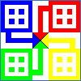

|
Her kan du lese om prosjektene mine i
java. Lite å finne her ennå, men det er ikke umulig at det
dukker opp litt av hvert i tiden som kommer. Det er vanskelig
å finne nok tid, samtidig som jeg går på
skole. Men i feriene bruker jeg å sysle med ett eller
annet prosjekt.
Ludo |

Ludo er nå et fullt ut fungerende spill.
Du kan spille det på Online
Spill-seksjonen.
Her kan du lese om hvordan ludo er laget, ved
å følge linken "Til ludoprosjketet..."
under. Der kan du laste ned hele kildekoden, og
gjøre de forandringer du selv ønsker
til spillet.
|
|
Til
ludoprosjektet...
|
|
|
Nettbasert Ludo
|

Her finner du prosjektsidene til den neste versjonen
av ludo, som skal være nettbasert, dvs kunne
linkes over internett.
|
|
Til
prosjektsidene...
|
|
|
Brukerundersøkelse
|
Brukerundersøkelse
er et lite program som er relativt lett å
legge til en eksisterende webside. For å
bruke dette programmet, trenger du en server med
php-støtte.
Det er to php-filer. En som lager et spørreskjema,
og en som tar imot stemmer og sender resultatet
videre til en applet. Følg linken "Til
brukerundersøkelse..." nedenfor, for
å lese mer.
|
|
Til
brukerundersøkelse...
|
|
|